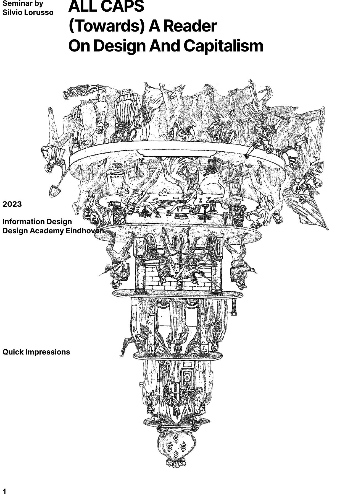
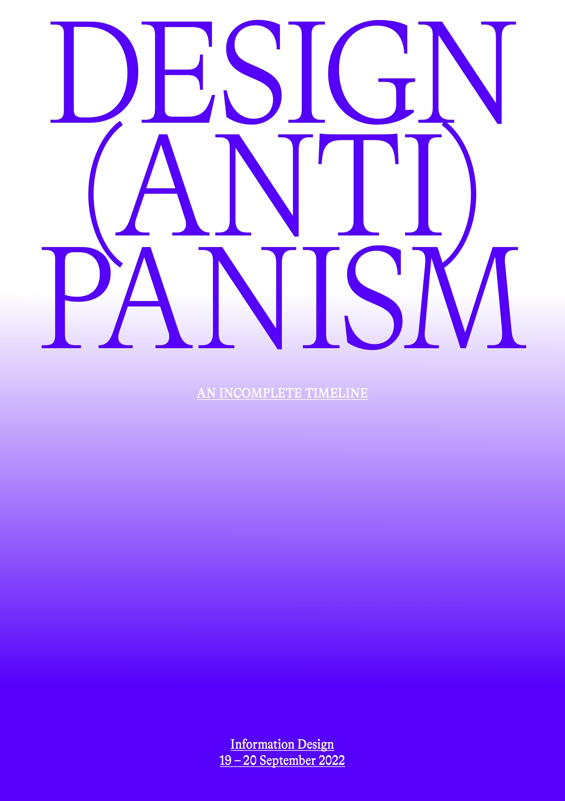

MA Information DesignResource List |
||
|---|---|---|
| [t] | [desc] | |
|  |
All Caps: Towards a Reader on Design and Capitalism |
Capitalism has emerged as a contentious subject of debate within design circles, igniting discussions that
extend beyond this mode of production to encompass potential alternatives. To gain a solid sense of the issue at
hand, however, it is essential to explore the relationship between design and capitalism in its specificity.
Sure, design and capitalism are inextricably related, but how? Does design play a privileged role in
perpetuating the capitalist machine? Can we trace the evolution of ideas about this subject throughout history?
Did these ideas change over time? Did new approaches emerge? In this two-day seminar, we have tried to answer
these questions and move beyond generalizations. To do so, we immersed ourselves in an array of texts spanning
more than a century. The goal of this analytical journey was to build the foundations for a reader on design and
capitalism, a reader that would enable students, designers and researchers to act within a capitalist system,
both theoretically and practically, with awareness and discernment.
Seminar run by Silvio Lorusso on 18–19.9.23 |
|  |
Design(Anti)Panism: An Incomplete Timeline |
Two oft-heard assertions inform today’s understanding of design: “everyone is a designer” and “everything is design”. It is within such professed design panism that designers (struggle to) articulate their role and position. But more than being a mere description of a reality, design panism is an interpretative framework, a rhe- torical instrument and a semi-conscious expansion agenda. In a two-day seminar, we broke down the conflicting meanings of these statements in order to elucidate their consequences on the designer’s identity and sense of realization. By analyzing texts spanning more than half a century – from Norman Potter to Keller Easter- ling, from Victor Papanek to Ruha Benjamin – we critically into design culture’s fractures and continuities.
Seminar run by Silvio Lorusso on 19–20.9.22 |
| MA Information Design, Design Academy Eindhoven |